Where do you want to start?
Pick one. We'll lay out three stops.
The sky, computed in your browser
… · Los Angeles
Positions from the Jet Propulsion Laboratory (JPL) Keplerian elements and Meeus' lunar theory, computed on your device. No network, no tracking.
Drag from a proton to the universe
Every page at a glance
Launch, land, and land again
Playable missions driven by real flight data: Apollo 11's stage masses and burn times, a reusable booster's hoverslam, the lunar module's descent engine, and Perseverance's entry profile. Each one lands within a few percent of what really happened.

Saturn V launch
Count down from T−10 on Launch Complex 39A, clear the tower and ride all three stages to a 185 km parking orbit. Six cameras, time warp, live telemetry, and the rocket equation checked against what the engines actually delivered.
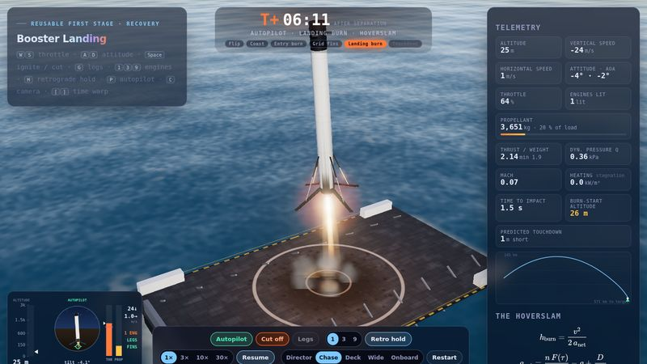
Booster landing
Flip, boostback, entry burn, grid fins, then a single-engine landing burn that cannot hover. Fly it yourself or watch a transparent autopilot do it.
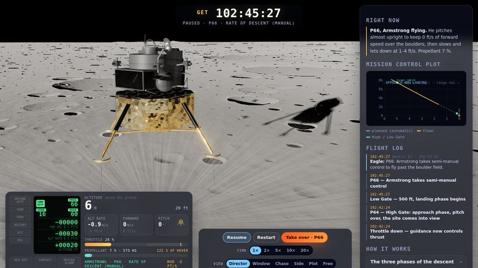
Moon landing
Fly Eagle from powered descent to touchdown, take over in P66 like Armstrong, and land with the fuel he had left.
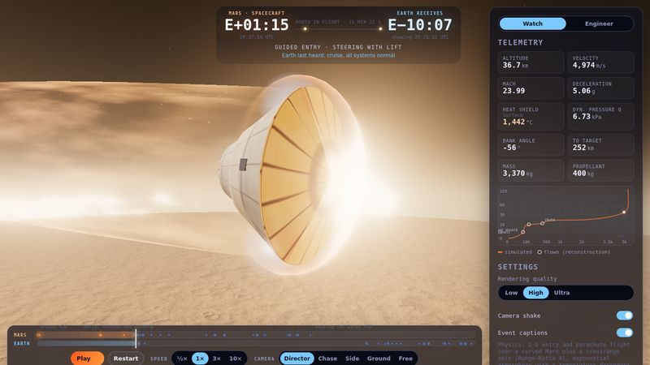
Mars landing
Perseverance's seven minutes of terror: plasma, parachute, sky crane. Watch it, or make the engineers' decisions yourself.

Space Shuttle Endeavour
The California Science Center's orbiter, stacked for launch as in the new Samuel Oschin Air and Space Center. Open the bay, deploy the arm.
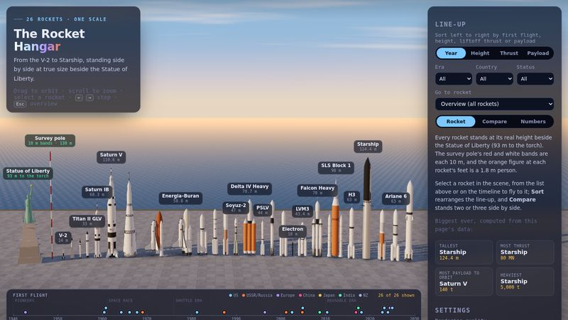
Rocket hangar
From the V-2 to Starship, every major rocket at true size. Sort, filter and compare height, thrust and payload.
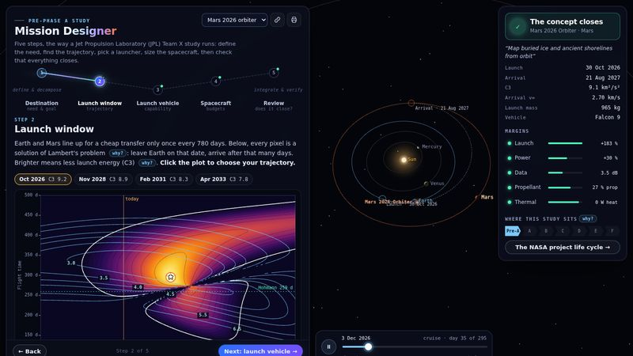
Mission designer
Plan a real interplanetary mission like a JPL concept study: pick a launch window on a porkchop plot, a rocket, then size power, radio and propellant until it closes.
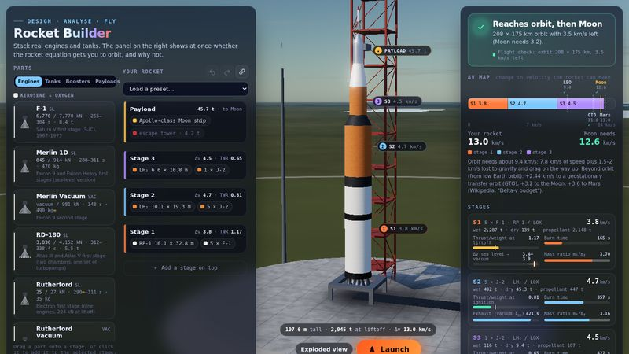
Rocket builder
Stack tanks, pick engines, add fins and fairings, watch Δv and thrust-to-weight update as you build, then launch it and see if it makes orbit.
From low Earth orbit to the edge of the universe
Live satellites, tonight's sky over your city, the solar wind hitting Earth, every planet where it really is, light bent around a black hole and two galaxies colliding. All computed in your browser from the models professionals use.
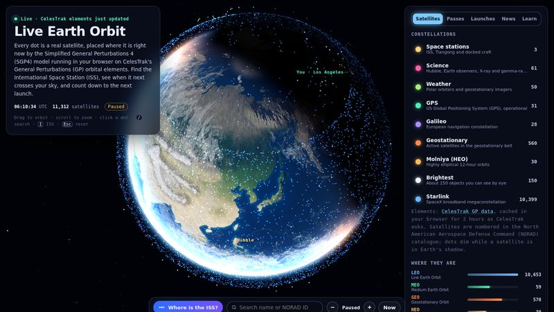
Live Earth orbit
Every tracked satellite overhead right now from CelesTrak data, when the ISS next passes over you, upcoming launches with countdowns, and the latest space news.
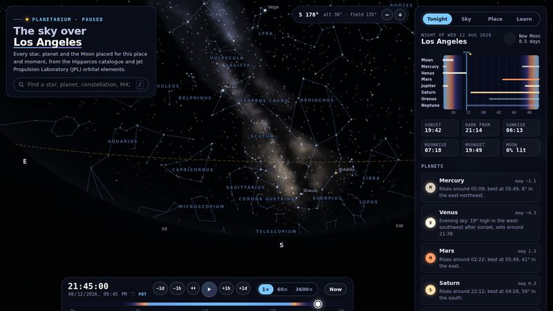
Night sky
The real sky for any place and time: constellations, planets, the Moon's phase, rise and set times, and tonight's highlights.
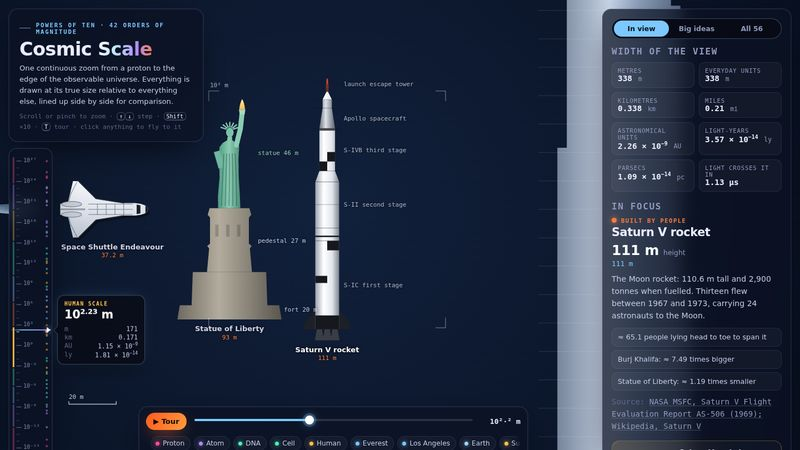
Cosmic scale
One continuous zoom from a proton to the observable universe, with how long light takes to cross each one.

Solar system
Every planet where it really is today, from JPL's orbital elements. Fly to any world and see light-time from Earth.

The Sun
Granulation, sunspots and prominences in five wavelengths. Trigger a flare, or slice it open to the core.

Black hole
Every pixel is a light ray traced through curved spacetime. Tilt the disk, switch off Doppler beaming, then fall in.
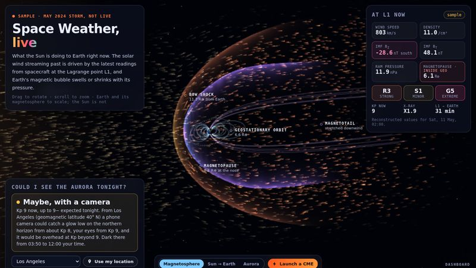
Space weather
Today's solar wind, geomagnetic storms and the aurora forecast, and how a flare on the Sun reaches Earth.
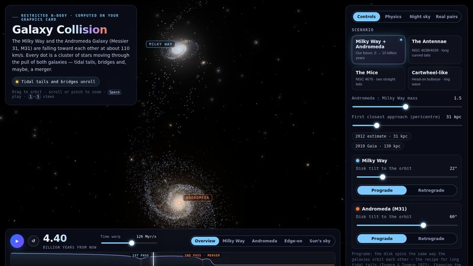
Galaxy collision
The Milky Way meets Andromeda. Tens of thousands of stars pulled by gravity on your graphics card: change the angle, the masses, the speed, and watch four billion years in a minute.
Solar observatory
Today's real Sun from NASA and NOAA telescopes in 12 wavelengths, the corona from SOHO, any day in history, and the greatest solar telescope photos.
Sky surveys
Pan and zoom the real sky in a dozen all-sky surveys, from Planck's microwaves to Fermi's gamma rays, with a guided tour of 20 famous objects.
Use a real telescope
56 robotic telescopes, radio dishes, live observatory streams, simulators and citizen-science projects you can use from your browser, most of them free.
Telescope simulator
Pick a telescope, an eyepiece and a target and see what you would really see: size, brightness, colour and the wobble of the air.
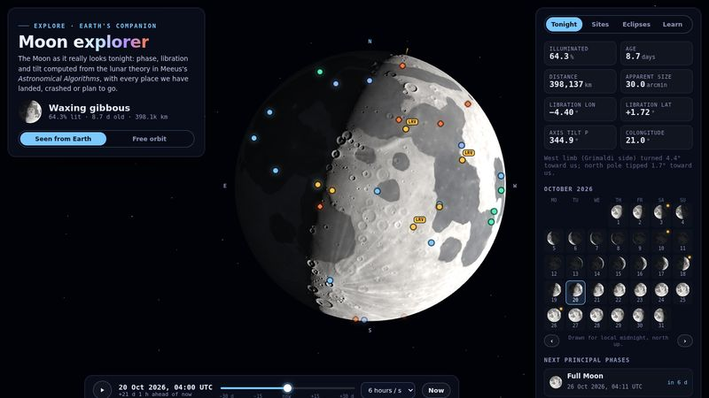
Moon explorer
Tonight's Moon at its true phase and wobble, every landing site from Luna 2 to Blue Ghost, and the eclipses coming up.
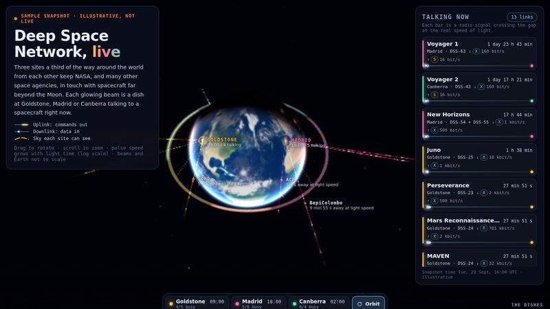
Deep Space Network
Which spacecraft are talking to Earth right now, at what data rate, and how many hours their signals take.
The maths, the pictures, the history, the paperwork
Start with the Orbit Lab: Newton's cannonball, Kepler's laws, Hohmann transfers, gravity assists and Lagrange points, each with its equation beside it. Then go deeper:
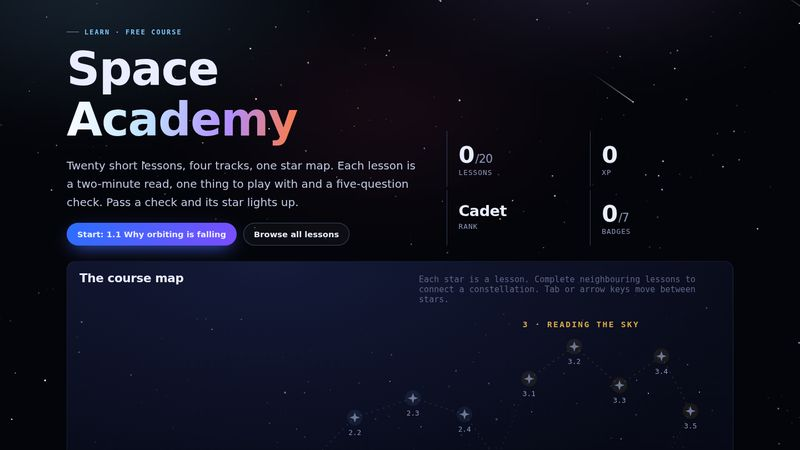
Space Academy
A free guided course in four tracks, from "why orbiting is falling" to designing a spacecraft. Every lesson has a hands-on widget, a quick check and a badge, and your progress lights up a constellation.
Equation Atlas
From Kepler to Friedmann: every equation with a plain-language meaning, a worked example using real mission numbers, a live calculator and a plot. Try the rocket equation above.

Gallery
Sixty-three photographs that changed how we see ourselves, from the first picture taken from space to the Webb telescope's deep fields, each with the story behind it.

Timeline
Tsiolkovsky's equation in 1903 to Artemis II's crewed lunar flyby in April 2026, filterable by agency.

Mission Library
79 primary sources: flight manuals, post-flight reports, payload user's guides, standards, datasets and the tools professionals use, with a reading path.
From the kitchen table to a flight computer you designed
Twenty step-by-step builds in five stages. Each has a bill of materials, the physics, a data sheet, and where it applies, 3D-printable parts (OpenSCAD + STL), firmware and a KiCad printed circuit board (PCB).
- Level 0Kitchen tableunder $10Stomp rocket · balloon rocket · pinhole Sun projector · impact craters
- Level 1Garage & backyard$10–50Water rocket with printed nose cone · DVD spectroscope · cloud chamber
- Level 2First real rockets$50–150Certified-motor model rocket · 3D-printed airframe · barometric altimeter
- Level 3Avionics$100–300RP2040 flight-computer PCB · LoRa telemetry ground station · star tracker
- Level 4Research grade$150+High-power certification · near-space balloon · hydrogen-line radio telescope · exoplanet transits
A Python toolkit for doing real astrodynamics
Seven command-line simulations with tests: a black hole ray tracer, a symplectic N-body integrator, a multistage ascent model, a Lambert solver for Earth–Mars launch windows, a transit search, stellar physics and ground tracks.


# clone, install, run
git clone https://github.com/Normansrule/cosmic-library.git && cd cosmic-library
python3 -m venv .venv && source .venv/bin/activate
pip install -r simulations/requirements.txt
python simulations/run.py blackhole # → outputs/black_hole.png
python -m pytest simulations/tests -q # physics checksBuilt with, and inspired by
Engines
three.js for every 3D scene, GSAP for motion, KaTeX for equations, NumPy and Matplotlib for the Python toolkit. All vendored, so the site works without a build step.
Design references
Interaction ideas re-implemented in plain CSS and JavaScript from Magic UI, React Bits, Animate UI and Motion Primitives; explorable-explanation style from llm-viz and Transformer Explainer; 3D craft from Bruno Simon's folio.
Data & imagery
NASA, the Jet Propulsion Laboratory (JPL), ESA, the California Science Center and many others. Every number on every page carries its source; see CREDITS.md. Not affiliated with or endorsed by any of them.